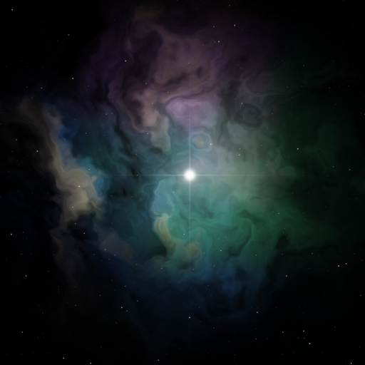

星雲
せいうん Seiun
読んだ本、観た映画やアニメ、心に残った言葉について、考えたことを残す iPhone のアプリです。
- 作品・人・言葉ごとに、自分の考えや、残したい言葉を書きとめられます。
- 書いたものは、その iPhone の中だけに置きます。アカウントも、書いたものを預かるサーバーもありません。
- 作品の表紙や情報は、公開されている目録（Apple、AniList、Wikipedia、TMDB、楽天ブックスなど）から探します。
いまは TestFlight で試していただいています（App Store にはまだ出していません）。
ENGLISH
Seiun is an iPhone app for keeping your thoughts about the books, films and anime you have enjoyed, and the words that stayed with you. Everything you write stays on your iPhone — there is no account and no server that stores your notes. Book and film details are looked up from public catalogs such as Apple, AniList, Wikipedia, TMDB and Rakuten Books. The app is currently in testing via TestFlight.